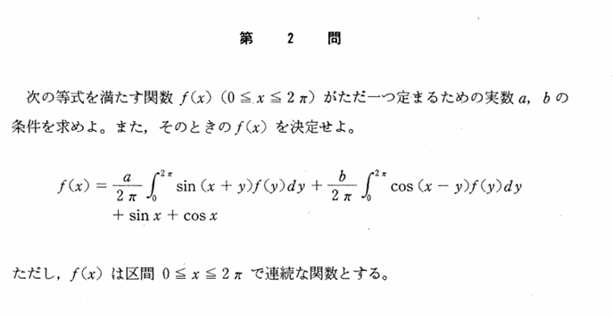

2001年 第2問
積分方程式

分析
最初の積分方程式においてはただの処理問題と言えるが、最後にただ1つに定まる条件を、連立方程式の解が定まる条件を考えれば良いことがわかるかどうかで差をつけられる。
また、〜がただ1つ存在するという文言に惑わされず、積分方程式は処理可能な条件であるというように本質的に捉えるか否かによるこの問題の取捨選択力も問える。
背景
$\frac{a}{2\pi}\int_{0}^{2\pi} \ $から伺えるように、フーリエ解析などに関係があるようである。調べてみると、フーリエ解析の「$\sin x,\cos x\ $は固有関数である」、すなわち、
$$(Tf)(x)=\int_{0}^{2\pi}K(x,y)f(y)\ dy$$のような積分作用素Tを考えたとき$$T(\sin x)=\lambda\sin x,T(\cos x)=\mu \cos x$$となる性質を用いることによって、$\ f(x)=a\sin x+b\cos x\ $と表せることがわかる。